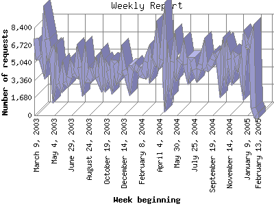

Analog 5.32
Analog 5.32 Report Magic 2.16
Report Magic 2.16The Weekly Report identifies the activity for each week within the report
time frame. Remember that one page hit can result in several server requests
as the images for each page are loaded.
Note: Depending on the
report time frame for this report the first and last week may not represent
a full seven day week, resulting in lower hits.

| Week beginning | Number of requests | Number of page requests | |
|---|---|---|---|
| 1. | February 13, 2005 | 3 | 3 |
| 2. | February 6, 2005 | 16 | 0 |
| 3. | January 30, 2005 | 747 | 402 |
| 4. | January 23, 2005 | 7,201 | 3,039 |
| 5. | January 16, 2005 | 6,598 | 2,344 |
| 6. | January 9, 2005 | 6,767 | 2,597 |
| 7. | January 2, 2005 | 7,168 | 3,663 |
| 8. | December 26, 2004 | 3,903 | 1,665 |
| 9. | December 19, 2004 | 5,302 | 2,639 |
| 10. | December 12, 2004 | 4,835 | 2,107 |
| 11. | December 5, 2004 | 5,669 | 2,688 |
| 12. | November 28, 2004 | 5,793 | 2,324 |
| 13. | November 21, 2004 | 4,360 | 1,811 |
| 14. | November 14, 2004 | 5,352 | 2,436 |
| 15. | November 7, 2004 | 6,041 | 3,144 |
| 16. | October 31, 2004 | 4,555 | 1,904 |
| 17. | October 24, 2004 | 5,742 | 2,568 |
| 18. | October 17, 2004 | 3,879 | 1,808 |
| 19. | October 10, 2004 | 5,837 | 2,309 |
| 20. | October 3, 2004 | 5,664 | 2,733 |
| 21. | September 26, 2004 | 5,736 | 2,696 |
| 22. | September 19, 2004 | 5,325 | 2,217 |
| 23. | September 12, 2004 | 4,710 | 2,055 |
| 24. | September 5, 2004 | 4,440 | 2,020 |
| 25. | August 29, 2004 | 4,529 | 2,508 |
| 26. | August 22, 2004 | 5,946 | 3,234 |
| 27. | August 15, 2004 | 4,843 | 3,014 |
| 28. | August 8, 2004 | 4,401 | 2,489 |
| 29. | August 1, 2004 | 3,904 | 1,701 |
| 30. | July 25, 2004 | 4,421 | 1,969 |
| 31. | July 18, 2004 | 5,301 | 2,477 |
| 32. | July 11, 2004 | 5,286 | 2,802 |
| 33. | July 4, 2004 | 4,133 | 2,248 |
| 34. | June 27, 2004 | 4,876 | 1,568 |
| 35. | June 20, 2004 | 6,051 | 3,096 |
| 36. | June 13, 2004 | 5,175 | 2,144 |
| 37. | June 6, 2004 | 5,107 | 2,483 |
| 38. | May 30, 2004 | 4,434 | 1,837 |
| 39. | May 23, 2004 | 6,258 | 3,011 |
| 40. | May 16, 2004 | 5,145 | 1,558 |
| 41. | May 9, 2004 | 3,467 | 1,715 |
| 42. | May 2, 2004 | 5,074 | 2,185 |
| 43. | April 25, 2004 | 3,395 | 1,382 |
| 44. | April 18, 2004 | 7,278 | 3,863 |
| 45. | April 11, 2004 | 5,291 | 1,923 |
| 46. | April 4, 2004 | 4,973 | 1,925 |
| 47. | March 28, 2004 | 6,873 | 2,089 |
| 48. | March 21, 2004 | 5,048 | 1,838 |
| 49. | March 14, 2004 | 5,175 | 2,575 |
| 50. | March 7, 2004 | 4,372 | 1,888 |
| 51. | February 29, 2004 | 5,803 | 2,558 |
| 52. | February 22, 2004 | 5,129 | 2,784 |
| 53. | February 15, 2004 | 3,789 | 1,126 |
| 54. | February 8, 2004 | 3,876 | 1,487 |
| 55. | February 1, 2004 | 4,394 | 2,054 |
| 56. | January 25, 2004 | 4,391 | 1,692 |
| 57. | January 18, 2004 | 4,717 | 2,246 |
| 58. | January 11, 2004 | 4,541 | 1,874 |
| 59. | January 4, 2004 | 4,497 | 1,674 |
| 60. | December 28, 2003 | 3,178 | 1,099 |
| 61. | December 21, 2003 | 3,899 | 2,445 |
| 62. | December 14, 2003 | 4,342 | 1,792 |
| 63. | December 7, 2003 | 5,258 | 1,988 |
| 64. | November 30, 2003 | 3,949 | 1,997 |
| 65. | November 23, 2003 | 3,616 | 1,422 |
| 66. | November 16, 2003 | 4,990 | 2,272 |
| 67. | November 9, 2003 | 5,037 | 2,706 |
| 68. | November 2, 2003 | 3,501 | 1,314 |
| 69. | October 26, 2003 | 4,331 | 2,453 |
| 70. | October 19, 2003 | 4,656 | 1,868 |
| 71. | October 12, 2003 | 3,523 | 1,375 |
| 72. | October 5, 2003 | 4,711 | 2,116 |
| 73. | September 28, 2003 | 3,204 | 1,459 |
| 74. | September 21, 2003 | 3,686 | 1,264 |
| 75. | September 14, 2003 | 4,566 | 1,886 |
| 76. | September 7, 2003 | 3,956 | 1,568 |
| 77. | August 31, 2003 | 4,226 | 1,968 |
| 78. | August 24, 2003 | 3,404 | 1,395 |
| 79. | August 17, 2003 | 3,425 | 1,248 |
| 80. | August 10, 2003 | 5,055 | 2,415 |
| 81. | August 3, 2003 | 3,385 | 1,006 |
| 82. | July 27, 2003 | 4,615 | 1,667 |
| 83. | July 20, 2003 | 5,375 | 2,962 |
| 84. | July 13, 2003 | 3,869 | 1,222 |
| 85. | July 6, 2003 | 4,035 | 1,353 |
| 86. | June 29, 2003 | 4,582 | 2,945 |
| 87. | June 22, 2003 | 3,612 | 1,421 |
| 88. | June 15, 2003 | 3,110 | 1,477 |
| 89. | June 8, 2003 | 3,213 | 1,086 |
| 90. | June 1, 2003 | 4,055 | 1,835 |
| 91. | May 25, 2003 | 2,788 | 1,034 |
| 92. | May 18, 2003 | 2,996 | 1,442 |
| 93. | May 11, 2003 | 4,761 | 2,097 |
| 94. | May 4, 2003 | 3,475 | 1,362 |
| 95. | April 27, 2003 | 6,106 | 3,030 |
| 96. | April 20, 2003 | 5,749 | 1,969 |
| 97. | April 13, 2003 | 7,261 | 4,492 |
| 98. | April 6, 2003 | 8,331 | 3,499 |
| 99. | March 30, 2003 | 4,953 | 1,756 |
| 100. | March 23, 2003 | 5,590 | 2,515 |
| 101. | March 16, 2003 | 5,547 | 2,839 |
| 102. | March 9, 2003 | 7,350 | 3,492 |
Most active week beginning April 13, 2003 : 4,492 pages sent.
Weekly average: 2,085 pages sent. 4,694 requests handled.
This report was generated on March 2, 2005 10:49.
Report time frame March 9, 2003 20:57 to February 15, 2005 03:11.
| Web statistics report produced by: | |
| Analog 5.32 | Report Magic 2.16 |